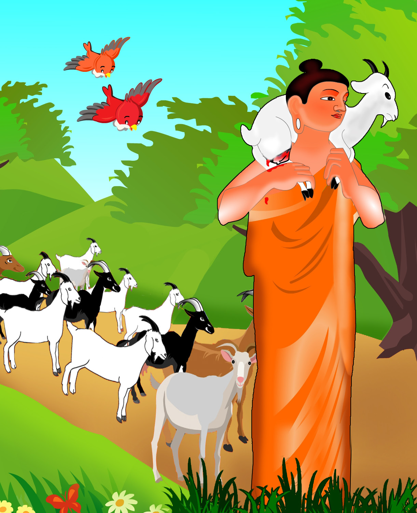
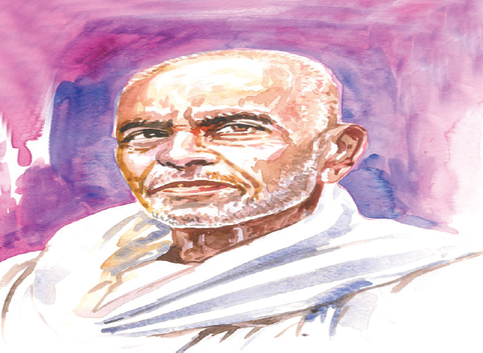

நுழையும்முன்
இரக்கம் என்பது தலைசிறந்த பண்பு. மனிதரிடம் மட்டுமன்று, மற்ற எல்லா உயிர்களிடத்தும் இரக்கம் கொள்ள வேண்டும். பிற உயிர்களைத் தம்முயிர் போல் எண்ணிக் காக்க வேண்டும். அதுவே சான்றோர் போற்றும் உயிர் இரக்கம் ஆகும். அவ்விரக்கமே மனித குலத்தை வாழ வைக்கிறது. உலக உயிர்கள் எல்லாம் துன்பம் இன்றி இன்புற்று வாழ வேண்டும் என்று விரும்பியவர் புத்தர். அவரின் அறவுரையை அறிவோம் வாருங்கள்.
முன்கதைச் சுருக்கம்
அரச வாழ்வைத் துறந்து நள்ளிரவில் அரண்மனையை விட்டு வந்தவர் புத்தர்பிரான். பிம்பிசார மன்னனின் யாகத்துக்காக ஆடுகள் கொண்டு செல்லப்பட்டன. அவற்றின் நடுவில் அடிபட்டு வலியால் துடித்துக் கொண்டிருந்த ஆட்டுக்குட்டியைப் புத்தர் தம் தோளில் சுமந்து சென்றார். யாகசாலையை அடைந்தார். மன்னனுக்கு அறவுரை கூறினார். நாடெங்கும் உயிர்க்கொலையைத் தடுத்து நிறுத்தினார்.

நின்றவர் கண்டு நடுங்கினாரே – ஐயன்
நேரிலே நிற்கவும் அஞ்சினாரே;
துன்று கருணைநிறைந்த வள்ளல் – அங்கு
சொன்ன மொழிகளைக் கேளும் ஐயா!
வாழும் உயிரை வாங்கிவிடல் – இந்த
மண்ணில் எவர்க்கும் எளிதாகும்;
வீழும் உடலை எழுப்புதலோ – ஒரு
வேந்தன் நினைக்கிலும் ஆகாதையா!
யாரும் விரும்புவது இன்னுயிராம்; – அவர்
என்றுமே காப்பதும் அன்னதேயாம்;
பாரில் எறும்பும் உயிர்பிழைக்கப் - படும்
பாடு முழுதும் அறிந்திலீரோ?
நேரிய உள்ளம் இரங்கிடுமேல் – இந்த
நீள்நிலம் முற்றுமேஆண்டிடலாம்;
பாரினில்மாரி பொழிந்திடவே – வயல்
பக்குவ மாவது அறிந்திலீரோ?
காட்டும் கருணை உடையவரே – என்றும்
கண்ணிய வாழ்வை உடையவராம்;
வாட்டும் உலகில் வருந்திடுவார் - இந்த
மர்மம் அறியாத மூடரையா!
காடு மலையெலாம் மேய்ந்துவந்து – ஆடுதன்
கன்று வருந்திடப் பாலையெல்லாம்
தேடிஉம் மக்களை ஊட்டுவதும் – ஒரு
தீய செயலென எண்ணினீரோ?
அம்புவி மீதில்இவ் ஆடுகளும் – உம்மை
அண்டிப் பிழைக்கும் உயிரலவோ?
நம்பி இருப்பவர் கும்பி எரிந்திடில்
நன்மை உமக்கு வருமோ ஐயா?
ஆயிரம் பாவங்கள் செய்தவெல்லாம் – ஏழை
ஆட்டின் தலையோடு அகன்றிடுமோ?
தீயவும் நல்லவும் செய்தவரை - விட்டுச்
செல்வது ஒருநாளும் இல்லைஐயா!
ஆதலால் தீவினை செய்யவேண்டா – ஏழை
ஆட்டின் உயிரையும் வாங்கவேண்டா;
பூதலந் தன்னை நரகம்அது ஆக்கிடும்
புத்தியை விட்டுப் பிழையும்ஐயா!
கவிமணி தேசிக விநாயகனார்
சொல்லும் பொருளும்
அஞ்சினர் – பயந்தனர்
கருணை – இரக்கம்
வீழும் – விழும்
ஆகாது - முடியாது
நீள்நிலம் – பரந்தஉலகம்
முற்றும் – முழுவதும்
மாரி - மழை
கும்பி – வயிறு
பூதலம் – பூமி
பார் – உலகம்
பாடலின் பொருள்
யாகசாலையில் நின்றவர் அனைவரும் புத்தர்பிரானைக் கண்டு நடுங்கினர். அவர் முன்னால் நிற்கவும் அஞ்சினர். கூடி இருந்தமக்களின் முன்னால் இரக்கமே உருவான புத்தர்பிரான் கூறிய உரையைக் கேளுங்கள்.
வாழ்கின்ற உயிர்களை அழிப்பது இந்த உலகத்தில் எல்லார்க்கும் எளிய செயல். ஆனால், இறந்த உடலுக்கு உயிர் கொடுத்து எழுப்புவது மன்னனாலும் முடியாத செயல்.
எல்லாரும் தம் உயிரைப் பெரிதாக மதித்துப் பாதுகாக்கின்றனர். எறும்பு கூடத் தன் உயிரைக் காத்துக் கொள்ளப் பாடுபடுவதை அறியாதவர் உண்டோ?
நேர்மையான இரக்க மனம் கொண்டிருப்பவரால் மட்டுமே பரந்த இவ்வுலகம் முழுமையையும் ஆட்சி செய்யமுடியும். உலகில் மழை பெய்வதால் வயல் பக்குவம் அடைவதை அறியாதவர் உண்டோ?
எல்லா உயிர்கள் மீதும் இரக்கம் கொள்பவரே நேர்மையான வாழ்வு வாழ்பவர். இந்த மறைபொருளை அறியாதவர் பிற உயிர்களை வருத்தித் தாமும் துன்புறுவர்.
காடு மலை எல்லாம் மேய்ந்து வருகிறது ஆடு. அது தன் குட்டி வருந்திடும் வகையில் பாலை எல்லாம் மக்களுக்குத் தருகிறது. இதனைத் தீயசெயல் என்று நீங்கள் கருதுகிறீர்களா?
இந்த உலகில் ஆடுகளும் உங்களை நம்பி இருக்கும் உயிர்கள் அன்றோ? நம்மை நம்பி இருப்பவரின் வயிறு எரியும் வகையில் நடந்து கொள்வதால் உங்களுக்கு நன்மை கிடைக்குமா?
ஆயிரம் பாவங்கள் செய்துவிட்டு, ஆட்டின் உயிரை எடுப்பதால் பாவங்கள் நீங்கி விடுமா? ஒருவர் செய்த நன்மையும் தீமையும் ஒருநாளும் அவரை விட்டுச் செல்லாது.
ஆகையால், தீய செயல்களைச் செய்யாதீர்கள். பிற உயிர்களைக் கொல்லும் செயலைச் செய்யாதீர்கள். இந்தப் பூமியை மகிழ்ச்சியற்றதாக மாற்றிடும் எண்ணத்தை உங்களை விட்டு நீக்குங்கள். இங்கு மக்களோடு சேர்ந்து மற்றஉயிர்களும் மகிழ்வோடு வாழ வழி செய்யுங்கள்.
நூல் வெளி

தேசிக விநாயகனார் இருபதாம் நூற்றாண்டில் வாழ்ந்தகவிஞர். முப்பத்தாறு ஆண்டுகள் பள்ளி ஆசிரியராகப் பணியாற்றியவர். கவிமணி என்னும் பட்டம் பெற்றவர்.
ஆசிய ஜோதி, ஆங்கில மொழியில் எட்வின் அர்னால்டு என்பவர் எழுதிய லைட் ஆஃப் ஆசியா (Light of Asia) என்னும் நூலைத் தழுவி எழுதப்பட்டது. இந்நூல் புத்தரின் வரலாற்றைக் கூறுகிறது.
கற்பவை கற்றபின்
1. நீங்கள் மிகவும் விரும்பும் தாவரங்கள், பறவைகள், விலங்குகளின் பெயர்களைப் பட்டியலிடுக.
2. உங்களைப்போல் பிறரையும் நேசியுங்கள் – என்னும் தலைப்பில் பேசுக.
1 புத்தரின் வரலாற்றைக் கூறும் நூல் டேஷ்
அ) ஜீவ ஜோதி
ஆ) ஆசிய ஜோதி
இ) நவ ஜோதி
ஈ) ஜீவன் ஜோதி
2 நேர்மையான வாழ்வைவாழ்பவர் டேஷ்
அ) எல்லா உயிர்களிடத்தும் இரக்கம் கொண்டவர்
ஆ) உயிரிகளைத் துன்புறுத்துபவர்
இ) தம்மை மட்டும் காத்துக் கொள்பவர்
ஈ) தம் குடும்பத்மையே எண்ணி வாழ்பவர்
3 ஒருவர்செய்யக் கூடாதது டேஷ்
அ) நல்வினை
ஆ) தீவிணை
இ) பிறவினை
ஈ) தன்வினை
4 எளிதாகும்’ என்னும் சொல்லைப்பிரித்து எழுதக் கிடைப்பது டேஷ்
அ) எளிது + தாகும்
ஆ) எளி + தாகும்
இ) எளிது + ஆகும்
ஈ) எளிதா + ஆகும்
5 ’பாலையெல்லாம்’ என்னும் சொல்லைப்பிரித்து எழுதக் கிடைப்பது டேஷ்
அ) பாலை+யெல்லாம்
ஆ) பாலை+எல்லாம்
இ) பாலை+எலாம்
ஈ) பா+எல்லாம்
6 இனிமை+ உயிர்என்பதனைச் சேர்த்து எழுதக் கிடைக்கும் சொல் டேஷ்
அ) இன்உயிர்
ஆ) இனியஉயிர்
இ) இன்னுயிர்
ஈ) இனிமைஉயிர்
7 மலை+எலாம் என்பதனைச் சேர்த்து எழுதக் கிடைக்கும் சொல் டேஷ்
அ) மலை எலாம்
ஆ) மலையெலாம்
இ) மலையெல்லாம்
ஈ) மலைஎல்லாம்
1 அரசனாலும் செய்யமுடியாத செயல் எது?
2 எறும்பு எதற்காகப் பாடுபடுகிறது?
3 ஒருநாளும் விட்டுச் செல்லாதது எது?
4 உலகம் முழுமையையும் எப்போது ஆளமுடியும்?
எல்லா உயிர்களும் மகிழ்வோடு வாழப் புத்தர்பிரான் கூறும் அறிவுரைகள் யாவை?
பறவைகளும், விலங்குகளும் சுதந்திரமாகவாழ வேண்டும் எனில் நீங்கள் என்ன செய்ய வேண்டும்?